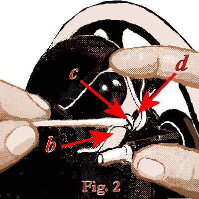
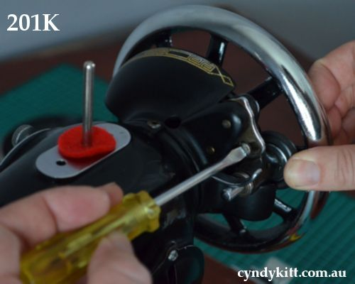
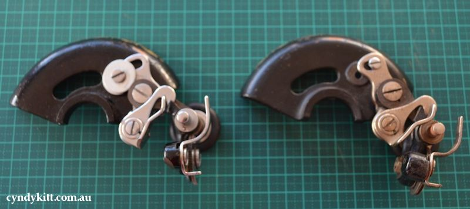
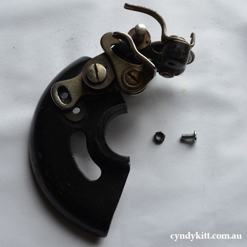
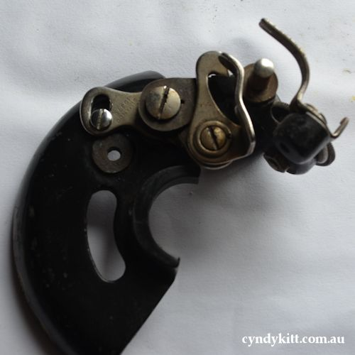
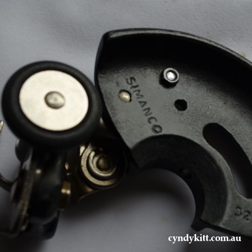

Balance Wheel
Loosening the stop-motion screw allows the balance wheel to run free, allowing bobbins to be wound without operating the stitching mechanism. To loosen the wheel, hold it with the left hand, and with the right hand turn the stop motion screw anti-clockwise, as shown in Fig. 1.
To remove the balance wheel, loosen screw a to allow the stop-motion screw to be removed. Behind the stop-motion screw at the end of the drive bar behind the balance wheel there is a stop-motion washer, the raised tines on the inner part of the washer should point outwards on Singer machines, if placed the wrong way this may stop the balance wheel running free. Use kerosene and ultra fine grade steel wool to clean away old oil and grime build-up from the drive shaft. Wipe clean and oil generously before reassembling with the new balance wheel.

After swapping to a spoked balance wheel, the pulley tyre which pushes against the ledge of the balance wheel may require adjustment; press down the winder til the latch (b, Fig 2) drops down and holds it, then loosen the screw (c, Fig 2). With a forefinger push back the upper end of the slotted plate (d, Fig 2) as far as it will go and with a thumb, press the winder against the ledge of the wheel; tighten the screw (c, Fig 2) and release the latch.


Some 66 and 99 class machines originally sold as electric powered machines will require modification to the winder to function properly with the spoked wheel



The crank mechanism is attached to the body of the machine with the same bolt which a motor would be attached.
When the cover is removed from the machine, the hand attachment will be found to be out of working position, as shown in Fig. 1. To operate the machine, pull the small spring stud (2, Fig. 3) and turn the handle back until the lever (1, Fig. 3) enters the socket (3, Fig. 4); also see that the hinged finger (4, Fig. 2) is turned back between the spokes of the wheel. The machine will then be ready for working.
Before replacing the cover, the lever should be disengaged, and the handle placed in the position shown in Fig. 3.
To Operate the Hand Crank
Tighten the balance wheel and place a piece of material under the presser foot. Then lower the latter by means of the lifter. Now turn the handle away from you to work the machine, without its being threaded, until you are accustomed to guiding the material with the left hand.
The bolt hole
Handcranks and motor brackets are both fitted to the pillar of a machine using this bolt hole. While the position of this hole is important for the function of the crank (4"/10cm directly below the centre of the drive shaft) this is less crucial for fitting the motor.
The Motor
Double Insulated Domestic Sewing Machine Motor
CE Standard Made in Taiwan
230v (suitable 220-240v), 90W, 0.4 Amps with the foot controller giving variable RPM (max 6000 RPM).
Motors are fitted with a standard Australian style 3-pin plug.
Also included is a 24cm belt (a longer belt will be required if you are fitting the motor to a Singer machine with a solid style balance wheel (sorry I don't currently stock these) and for those of you with the appropriate qualifications, the metal connectors to wire up the light.